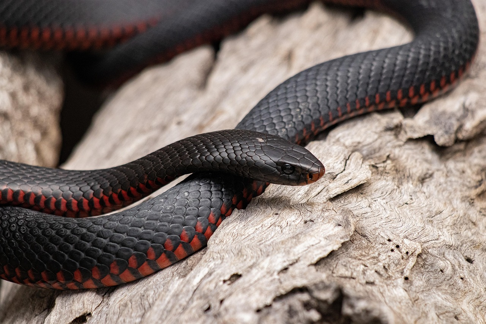

La serpiente es un reptil vertebrado conocido por su cuerpo alargado y la ausencia de patas. Es un animal muy adaptable que puede vivir en distintos ecosistemas del planeta y se caracteriza por su forma de desplazarse reptando y por su gran capacidad de caza.
🌍 Hábitat Las serpientes habitan en casi todo el mundo, excepto en regiones extremadamente frías como la Antártida. Pueden vivir en selvas, desiertos, bosques, praderas e incluso cerca del agua.
🐾 Estilo de vida Las serpientes son animales carnívoros que se alimentan principalmente de roedores, aves, huevos, insectos u otros pequeños animales. Algunas especies utilizan veneno para inmovilizar a sus presas, mientras que otras las capturan por constricción.
